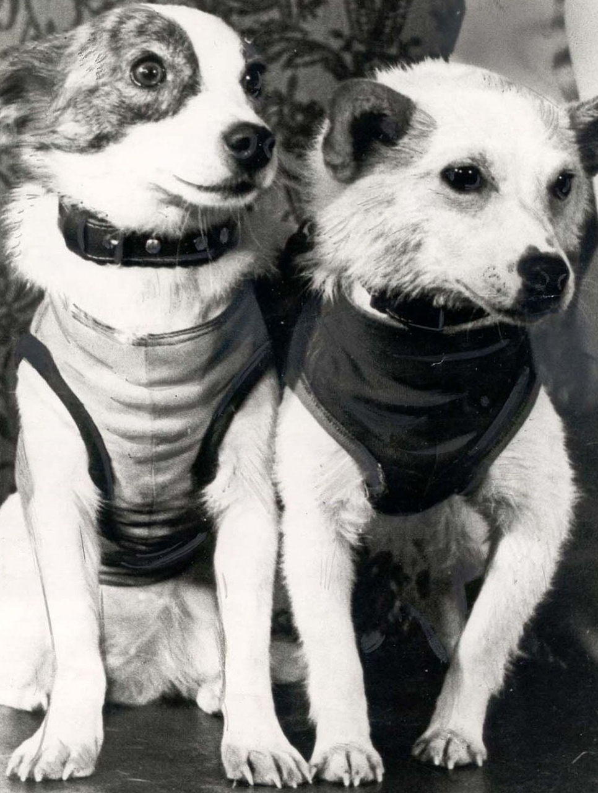
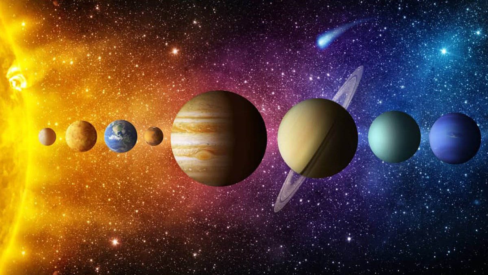
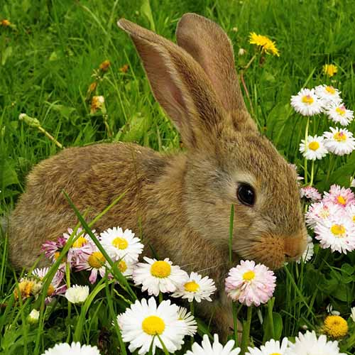
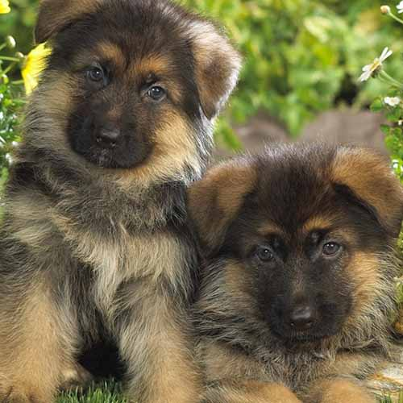
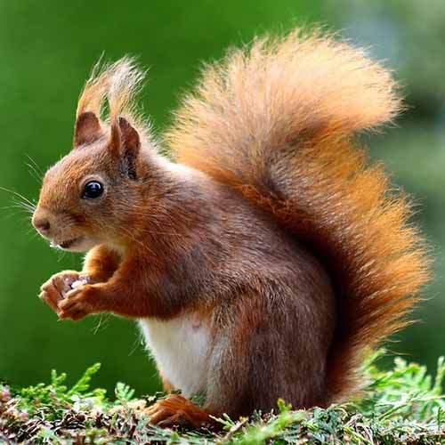

Белка и Стрелка
🛰️виртуальное путешествие🚀
Какие животные первыми были в космосе?
19 августа 1960 года был осуществлен запуск космического корабля с собаками Белкой и Стрелкой на борту.
Это был первый орбитальный полет живых существ с успешным возвращением на Землю.

Виртуальное путешествие в Солнечной системе




